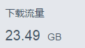

はじめに：
6月末からこのチュートリアルシリーズの執筆を始め、約5か月以上かけて、ついに今日書き終えました。全チュートリアルの本文は148編、10の大章からなり、基本的なUI控件（UIコントロール）から四大组件（四大コンポーネント）、Intent、Fragment、イベント処理、データ保存、ネットワークプログラミング、描画とアニメーション、マルチメディア、システムサービスなどについて詳細に解説しました！コードはすべてAndroid Studioで作成し、全文Markdownを使用しており、文章構成も明確で、実際の開発でよくある問題についても分析を交えています...個人の能力の限界により、全力を尽くしましたが、それでも誤りや抜け漏れがあるかもしれません。読者の皆様の寛大なご指摘をお願い申し上げます。この教材を書く過程で多くの感慨があり、完結を祝うこの最後の節で思いの丈を一気に吐き出し、これもひとまず自分のブログ活動に別れを告げる一筆となるでしょう...一気に吐き出してスッキリ～
1.このチュートリアルシリーズの由来
覚えているのは5月のある夜のこと。ルームメイトと「撸啊撸（League of Legends）」をやり終えたばかりで、スマホをいじっていました。何気なくw3c鸟巢の公式アカウント（公众号）を追加し、プッシュされてきた記事を見てみると、ちょっと面白そうだなと感じました。そこで百度（度娘）で「w3c鸟巢」を検索してみました。すると「菜鸟教程」というコーナーがあり、そこにあるチュートリアルのほとんどはWeb系の基礎チュートリアルでしたが、モバイル端末向けのチュートリアルも見つかり、そこには「Androidを学ぶ」という文字がありました！そんなチュートリアルがあったのです。Androidをやっている者としては、物語の展開上、すぐにこのリンクをクリックして、何かが起こるはずでしょう...しかし、私はクリックしませんでした...だから話はここで終わりです、ハハ...もちろん、最終的にはクリックしました。ただ、その間にルームメイトと下に行って糖水（甘い汁物）を一杯飲んだだけですが～時が経ちすぎて、チュートリアルの内容はもう忘れてしまいました。でも今でも覚えているのは、私のロッカーの底に『Android疯狂讲义（Android狂熱の講義）』という本があることです。大学で初めて買ったプログラミングの本で、ハハ、惜しいことに100ページほど読んで諦めました。まるで中国語版のAPIドキュメントでしたからね...この本があったからこそ、小猪Android入门之路という連載を始めたのです。当時は試しの気持ちで、w3cの大师姐（大師姐）の微信（WeChat）を追加し、Android基礎チュートリアルを書ける人が必要かどうか尋ねて、小猪入门之路のリンクを送りました。すると大师姐はとても喜んでいるようで、著作権を売らないかなどと聞いてきました。著作権を売る？それってお金がもらえるってこと？不遇な学生の身としては、何か書いてお金がもらえるなんて、考えるだけでちょっとワクワクしますよね。結局一晩中興奮して、頭の中ではいろいろと考えました...その後、自分でもどういう心境だったのか分かりませんが、FK（w3c鸟巢の管理者）と話をして、w3c鸟巢の菜鸟教程でAndroidの基礎チュートリアルシリーズを書くことに決めました。無料で。ええ、その通り、一銭も受け取りません。前提としてチュートリアルが商業目的に使用されないことです。理由はおそらくFKの共有する精神に感化されたからでしょう。あるいは本当にAndroidのチュートリアルシリーズを書きたかったからかもしれません。ほとんどの大物（達人）は時間がなかったり、基礎入門チュートリアルを書くのを潔しとしなかったりします。それなら私のような雑魚が書こうじゃないか！後から来る初心者のために道を整えておくのも悪くないでしょう～次に百度脑图（百度マインドマップ）を使って入門シリーズで解説する内容を構想し、Markdownの構文を学んで、それから書き始めました。最初はcoder-pigに書きたくありませんでした。何しろ、そこには多くの途中で投げ出された（太监状態の）チュートリアルがあったからです。それでサブアカウントを作って、そこにこの新しいチュートリアルを書こうと思いましたが、アクセス数は惨憺たるものでした。もしあなたがブログを書く人なら、多くの時間をかけて書いたものが誰にも読まれないのを見たら、気分が良くないでしょう...結局、黙ってcoder-pigに戻し、第一章を書き終えて、w3c鸟巢でも公開し始めました！それから毎日、次のような
変化のない退屈な生活：毎日出勤すると、時間があれば今日はどんな知識ポイントを書くか、どんな面白い例を書くかを考え、夜5時半に仕事が終わったら、ご飯を食べに行き、戻ってきてひたすら書き続けました。毎晩、基本的に私が最後に鍵を閉めていました。だいたい10時半ごろに帰ります。一番遅かった時は、書きすぎて時間を忘れ、12時半まで書いていました。書き終えて時計を見ると、うわっ、12時半！！！
怖くなって急いで荷物をまとめ、一目散に走りました。というのも、園区（オフィスパーク）は12時に裏口が閉まるはずだったからです。そこに着くと、門は閉まっていて、心は一気に冷めました。くそっ、まさか今夜本当に会社に寝ることになるのか...その後、近づいて見ると、門は鍵はかかっておらず、ただ閉めてあるだけだと分かり、最後は無事に寮に帰れました...土日もたいてい予定はなく、会社に戻って記事を書いていました。たまに天気が良ければ誰かとバドミントンをしましたが、ほとんどの時間は執筆に費やしました。こうして5か月以上続けて、このチュートリアルシリーズもようやく完結しました～
今の気持ちは、ちょっと嬉しく、ちょっと興奮していますが、それ以上に解放感があります。ようやく書き終えました～～～なぜ解放感なのか、慌てずに、ゆっくりお話ししますので聞いてください...
2.私の状況をいろいろ話す
グループで「猪神はどこに勤めているのか」「月収はいくらか」「私の弟子になってくれ」などと聞く必要はありません。今、自分の状況をいろいろ話しましょう！今年の新卒（15年卒）で、学校は北京理工大学珠海学院（北理珠）です。現在は南方ソフトウェアパークで働いていて、私はAndroidインターンで、月収もわずか3K、五险一金（中国の社会保険と住宅積立金）なんて一切ありません！ええ、見間違いではありません。私は月収3K（3000元）のインターンです。もしかすると冗談だと思うかもしれませんが、これが事実です。大学時代の自分勝手さのせいで、今も2科目が未合格です：高等数学の上と下です。だから卒業証書をまだもらえていません...がっかりしましたか？この教材を書いたのはどこの大物かと思っていたら、まさかのインターンだったなんて、ハハ～
では、現在の自分のAndroid技術レベルについて話しましょう：
中の下、いや中の下にも達していないかもしれません。小規模なプロジェクトなら単独で完成できます！しかし、アーキテクチャなどはクソ同然で、再利用性など全く考慮しておらず、言わば適当に寄せ集めたゴミです。多くの新興技術については、聞いたことはありますが、時間をかけて研究したことはありません...
続いて自分の職歴について話しましょう：
2015.2
学校の春季就職説明会で見つけた最初のインターンシップは、拱北跨境工業区のあたりにある、ある外注（オフショア開発）会社でした。会社というよりは仕事場（スタジオ）と言ったほうがいいほどで、全部で7人しかおらず、後になってHR（人事担当）も1人辞めてしまいました。この会社に1か月余りいましたが、得たものは：公式のAPIドキュメントを見ることを学んだ（李刚の本を必死に読むのではなく）；Hostsを変更することを学んだ；Fragmentの使い方を知った；华仔天地（アンディ・ラウのファンクラブAPP）のUIを書いた；さまざまな雑用をした；彼らは独自の仕組みを持っていて、実はよく使う機能をJarパッケージに入れているだけでした。例えば、画像の非同期読み込み、画像サイズの動的計算などです...必要な機能があれば後ろの人に聞く、そうです、ドキュメントはありません...すべてのAPPが同じパターンでした。外注会社はどこもこんなものかもしれません。プロセスよりも結果だけを重視しています。もう一つ、私が最も受け入れられなかったのはテストで、私と美工（デザイナー）を呼んで画面をスワイプさせ、プログラムがクラッシュしなければそれで良し、これをテストと呼ぶのです...こうして、私はこの会社を去りました。その時、私のインターン給料は2.8k（2800元）、本採用後は3.2k（3200元）でした！
2015.4
それから、私はまた別の仕事を探しました。清华科技园のあたりで、今度は外注会社ではなく、主に防犯・セキュリティとスマートホーム関連をやっている会社でした。雰囲気は悪くなく、たまに技術的な問題で激しく言い争う（撕逼）こともありましたが、金曜の午後には技術交流会もあり、新しいPCとモニターも支給されて、ここにいればきっと楽しくやっていけると思いました！最初の1か月はドキュメントを見たり、引き継ぐプロジェクトを確認したりして、そこそこ潤った日々を過ごしていました。しかし、良い状態は長く続かず、3年間働いていた古参の社員が辞めることになったのです！彼が持っていた2つのプロジェクトをすべて私に任せ、さらに別の新しいプロジェクトも始めなければなりませんでした。それ自体はどうにか耐えられるものでしたが、引き継いだ2つのプロジェクトのうち1つは修正が必要で、しかもバージョンリリースを出さなければならず、コードすらまだ十分に把握していませんでした...どうやってこなせというのでしょうか。自分1人では手が回らず、時間をかけたくもなく、期限が来ても何も作り上げられず、それで他の人にも迷惑をかけることになる！辞めたいと思った前の週はとても抑圧された気分でした。偶然の巡り合わせで、確か水曜日の午後だったと思いますが、今の会社のHRから電話がかかってきて、今のマネージャーと電話面接をしました。Androidの基礎的なことをいくつか聞かれ、かなり話が弾みました。それから会う約束をして、金曜日に面接に行きました。続いて今の会社の状況についていくつか話しました。第一印象は、会社の環境は悪くないかな、席もわりと広々としている、という感じでした。それから、まだ卒業証書をもらえていないこと、本採用になれるかどうかを伝えました。その時は気前よく「大したことじゃない、人事に言っておくよ」と言っていました...しかし、ここで半年も過ごしていますが、まだインターンのままです...それで月曜日に会社に戻って辞職願を提出し、2社目の会社を去りました。この会社での1か月で、視野が広がり、NDKや動画のエンコード/デコードといったものを知りました～この時、私の試用期間給料は3.8k（3800元）、本採用後は4.2k（4200元）でした！
2015.5
うん、2社目の会社を辞めた後、学校で1週間はしゃいで、適当に卒業制作を仕上げてしまった。無理やり2つのアプリに分割された卒業制作：「海绵表表」と「一起啪啪啪」。今にして思うと、自分が書いたあの2つは直視できない。後で卒業制作を売った、200元で…。それから月曜日に今の会社に来て、またもやプロジェクトの引き継ぎ。元々ここにいたAndroid開発の達人がMeizuに転職するらしく、初めて達人のオーラを感じた。もし彼が去らずに居続けてくれていたら、どれだけ良かっただろうか？ そうすれば今頃はまた違う結果になっていたかもしれないな〜。SVNからGitへ、GUIからコマンドラインへ移行した。アノテーション、RxJava、okhttp、github、多渠道パッケージングなどを知った。楽しく1週間過ごした後、達人は去っていった。その後は自分ひとりでプロジェクトを読むことになった。新大陸に来たみたいで、以前は見たこともないものがたくさんあった。そんな感じで約1ヶ月はしゃいだ。会社はもう1人Android開発者を採用した。最初は3年の実務経験があると聞いて、誰かが俺を導いてくれるのかと思った。しかし思い通りにはならず、彼からは達人のオーラを感じなかった。この業界に3年いただけなのかもしれない。レベルはごく普通で、自分と比べると業務経験が少し多い程度だろう。彼とマテリアルデザイン（MD）の話をしても、聞いたことすらなかった。Android Studioも知らなかった。他は言うまでもない。ある時、簡単なViewをどうカスタマイズするのか彼に聞いたら、彼の答えは「ネットで探してちょっと変えれば使えるよ」だった。俺が聞きたかったのは実装の考え方なのに、返ってきたのは「使い方を知っていればいい」だった…。うん、まあいいや！ 3年なら、プロジェクトはもちろん彼が引き継ぐだろう。ところがマネージャーは俺に別のプロジェクトを投げてきた。ドローンにスマホを括り付けて基地局アンテナの角度などを計測し、Wi-Fi経由で地上の別のスマホに表示するというものだ。スマホ自体のデータ収集とデータ転送は大したことではない。難所はシリアル通信(FTDI)系のもので、スマホはOTGケーブルでマイコンに接続し、コマンドの送受信を行う。APIドキュメントを見ながら1週間格闘したが、最も簡単なDemoすら書けず、送信はできても受信ができなかった……同じ状況がもう1週間続いた。まあ、何も書けない感覚は本当に辛い。仕方なく他人のAPKを逆コンパイルした。2日かけて他人のAPKのコードから最重要部分だけを抽出し、6000行以上のコードが500行余りになった。マイコンの送受信信号ランプが点滅するのを見て、かなり達成感があった！ 残念ながら良いことは長く続かず、マネージャーがリアルタイム動画再生を追加しろと言ってきた。マジかよ……そんなのやったことないし、どうやれと。それでGitHubでオープンソースの動画ライブ配信プロジェクトをいくつか探した。結局WifiCaremaを研究プロジェクトにした。それからh264ライブラリのコンパイル問題に約2ヶ月悩まされ、結局解決できなかった。結果、プロジェクトは北京の業者に外注された。うん、最初のプロジェクトはこんな形で半端に終わった……。次に簡単な小さなものを作り、さらに次は今に至る。ずっとwebsocketの問題を追って解決しようとしている。弊社のプッシュはサードパーティ製ではなく、自前でsocketioを使って構築したプッシュプラットフォームだ。socketioを使った理由は、iOS、Android、Webの3つのプラットフォームで同じものを1つ使えるからだ。それなのに、メッセージが欠落したり、位置情報の更新を受信できなかったりする問題が発生した。今に至るまで原因が見つかっていない。問題を再現することすらできない。こちらのテストではずっと問題ないのに、顧客の手に渡ると様々な問題が起きる……。今もこの問題に悩まされている……。ここに来て半年、まだインターンだ。インターン給料は3k。卒業証書は早くても来年6月にならないと手に入らないし、正社員登用はおそらくないだろう。はあ……
うん、以上が俺の今年の現状だ。少し前に追梦网络の面接に行って、面接官と今の状況を話した。彼は、俺は我流でやってきて、いろいろと方向がずれていると感じたと言った。そして、卒業後のこの1年がとても重要で、この先形になってしまうと変えるのは難しいと言われた。それからアーキテクチャの話も少しした。うん、あんなに1つの会社に入りたいと思ったのは初めてだった。インターンとして2ヶ月だけでも良かった。うん、残念ながらオファーはもらえなかった。ただ、全齐大神には本当に感謝している。1つの授業をしてもらったようなもので、ようやく次に何を学べばいいか分かったから。その後も2社面接したけど、特にピンとこなかった。自分が望むタイプではなかった。最後にMeizuのインターンに応募してみたが、はは、面接の機会すらなかった。こんなの初めてだ。おそらくHRは履歴書すら見ていないだろう。以上が俺の個人的な状況の説明だ。俺は本当に月給3Kしかないインターン奴だから、グループ内の月給10kの旦那たち、祝祭日のたびにこの貧乏人に紅包を送らせようとしないでくれ……
3.独学の心得とリソース共有
Androidをどう学ぶか。これは初心者が最もよく聞く質問かもしれない。上の話で、子豚がどれだけクソか君も分かっただろう。だから以下は、俺が独学について抱いている浅はかな考えに過ぎない。気に入らなければ罵ってくれて構わない〜
1）本を読む
入門におすすめの本：
- 《第一行代码》：この本は言うまでもなく、郭霖大神が書いた本で、入門に必携だ
- 《Android群英伝》：これは医生（徐宜生）が書いたものだ。へへ、双11（独身の日）に買って、今日届いたばかり。パラパラめくってみたけど、内容はまあ簡単で、最初の本を読み終えた人や、Androidを少し知っている人向けだ〜
「李刚の『Android疯狂讲义』もあるじゃないか」と言う友達もいるかもしれない。うん、辞書として買うのはありだ。でも上記の2冊を読んだ方が早く入門できると思う。また、『第一行代码』を読むときは、子豚が書いた基礎入門チュートリアルを併用すると効果がより良い。
ステップアップにおすすめの本：
これから自分が手に入れたいと思っている本でもある：
《Androidソースコード設計パターン解析と実践》：何红辉（Simple兄）、关爱民（爱兄）という二人の大作。デザインパターンを学べるだけでなく、Androidに込められた設計思想も感じ取ることができる！
《Android開発芸術探求》：任玉刚。Android知識の体系化とシステム動作メカニズムの分析に重点を置いている。
- 《Android 5.0システム徹底解析》：最新のAndroid 5.0システムの主要フレームワークの原理と具体的な実装を分析している〜
上記の数冊はまだ触ったこともない（まだ入手していない）が、どれも評判の高い本だ。ここでもおすすめしておく！
2）ビデオを見る
ネット上にはAndroidの動画チュートリアルがたくさんある。ここでは基神おすすめの黒馬チュートリアルを共有しよう：
黒馬28期Android全動画・暗号化なし完全版：パスワード：h7jz
52期 暗号化なし版：パスワード：zve8
もちろん、以下の動画学習サイトもなかなか良いので、こちらもおすすめしておく
3）他人の技術ブログを見る
- CodeKK—— オープンソースプロジェクトのソースコード解析と優れたオープンソースプロジェクトの共有に注力している
- Trinea—— パフォーマンス最適化、ソースコード解析
- 老罗的Android之旅—— Androidシステムソースコード分析
- 開発技術最前線——『Android源码设计模式』の著者Mr.Simpleが運営するコミュニティサイト
- 爱哥——『Androidソースコード設計パターン』著者 関愛民
- 任玉刚——『Android开发艺术探索』著者 CSDNブログ
- 郭霖——『第一行代码』著者 CSDNブログ
- 鸿洋—— CSDNブログ専門家
- 胡凯—— パフォーマンス最適化に注力
- 张明云—— Android学習の道
- Drakeet—— 贝壳单词APPの開発者
- 徐宜生——『Android群英伝』著者
- 代码家—— 有名ブロガー
- 脉脉不得语—— 有名ブロガー
- 高建武—— パフォーマンス最適化に注力、簡書（Jianshu）の有名ブロガー
- 程序亦非猿—— 簡書（Jianshu）の有名ブロガー
- 廖祜秋liaohuqiu_秋百万—— 淘宝（Taobao）社員
- hi大头鬼hi—— RxJavaについて深い研究をしている
- 阳春面—— 簡書（Jianshu）の有名ブロガー
- 夏安明—— CSDNブログ専門家
- 兰亭风雨—— CSDNブログ専門家
- 赵凯强—— CSDNブログ専門家
- qinjuning—— CSDNブログ専門家
- 工匠若水—— CSDNブログ専門家
- 张兴业—— CSDNブログ専門家
- Coder-pig—— CSDNブログ専門家、最良の入門コラム
- Keegan小刚—— Androidスタイルに関する記事を多数共有している
- 郑海波—— CSDNブロガー。記事は主にカスタムViewに関するもの
- 吴小龙同学—— Android Design Support Libraryに関する記事を多数共有している
- 全速前行—— CSDNブログ専門家。実践テクニックと日常遭遇する問題を中心に解説
4）高品質なAndroidコミュニティ
- Stackoverflow—— 海外の有名なQ&Aコミュニティ
- V2ex—— V2ex Androidセクション
- Android 開発技術週報—— 長期的に最新の先端情報を更新し続けている
- 開発技術最前線—— 『Androidソースコードデザインパターン』著者 Mr.Simple が運営するコミュニティサイト
- ネットに浸かる日々—— 大量のサードパーティ製コントロールの拠点
- オープンソース中国 —— OsChina
- 23code—— Android定番オープンソースコード共有
- App開発者—— Android/iOS/Swift開発およびインターネットコンテンツを共有
- JavaApk.com—— Androidデモの集積地。一部のソースコードはVIP購入が必要
- DevStore—— 各種デモ、およびサードパーティサービス
5）公式学習サイト/Wiki
6）コード/プロジェクトのダウンロード
うん、ほとんどの場合Githubで探すことにしている。オープンソースのサードパーティ製がたくさんある。以下のものは必ずStarしてください：
そして筆者が以前、某宝(タオバオ)で50元以上払って購入したコードも共有しよう：
5000セットのAndroidソースコードパスワード：6we63175セットのiOSソースコードパスワード：53v9
上記のコードセットは重複が多いが、ほとんどがEclipseベースで、範囲は比較的広いので、一見の価値あり！
7）梯子ツール（VPN等の回線ツール）
うん、頻繁にhostsを変更したくない、または科学的上網(プロキシ利用)をしたくないけどGoogleを使いたいなら、藍灯(Lantern)を使うといいよ〜 自分で"Lantern"を検索してダウンロードしてね〜
8）その他の雑談：
うん、上記のリソースの大部分は以下のものから来ている：Android学習リソースサイト大全、必ずStarしてください！！！今後新しいリソースがあれば上記で更新していくので、皆さんのコレクションもshareしてください。上記の内容は小猪のグループの第一人者——基神が書いたもので、もちろんB神や曹神、街神などもいる。ここで皆さんのこれまでの指導と助けに心から感謝する〜
上記のリソースを見て、ブックマークして、買って買って、ダウンロードしてるんじゃないかな〜
言いたいのは、ブックマークしても見なければ、ただのURLにすぎない；ダウンロードしても見なければ、ただのデータの山にすぎない；本を買っても見なければ、ただの紙の束にすぎない！自分がただ忙しく頑張ってるように見えるだけにならないで、誰に見せびらかすんだ？身につけたものこそが自分のものだ。こんな言葉がとても好きだ： "技術の道が最も公平で最も残酷な理由は、近道がないこと、日々の積み重ねと、技術に対する持続的な情熱が必要だということだ。" ずいぶん前に見た、锤子科技(スマートIS)のデザイン責任者である羅子雄がTEDxで行った講演「如何に優秀なデザイナーになるか」の中で言ったこんな一節を覚えている：グラッドウェルは『異類』(Outliers)の中で次のように指摘している：「人々の目に映る天才は、卓越非凡なのではなく、絶え間ない努力を続けた人であり、1万時間の鍛錬は誰もが平凡から超凡へ変わるための必要条件である。」1万時間というのは、つまり1日8時間働き、週5日働くと、5年必要だということだ。天才である必要も、人並み外れた知能も、八面六臂の能力も、頭に角が生える必要もない。持続的で粘り強い努力と正しい方法があれば、デザイン分野、ひとつの専門分野で一人前になることができる。彼が話しているのはデザインだが、多くのことは通じるものがある。へへ、容赦なく特大の心靈雞湯(インスピレーショナルな話)をぶっかけられた〜 独学をまとめると、要するに：本をたくさん読み、ブログを見、プロジェクトを行い、ソースコードを見、絶えず総括し振り返り、学んだものを構造化すること！
4）質疑応答
以下は読者からよく聞かれる質問で、ここで一括して回答する：
1.以前はXXを学んでいた、またはプログラミングをやっていなかったが、Androidを学びたい、ちゃんと学べるか？といった質問！答：先日、医生(徐宜生)の新浪微博で見たのだが、65歳のおじいさんが彼の会社にAndroid Studioについて質問に来たそうだ。これを見て、上記の質問はまだ問題だと思うか？
2.XXXでエラーが出た？どうすればいい？といった質問答：これが最も頻繁だ。実は多くは度娘(百度)や谷哥(Google)で答えが見つかる。これだけ多くの人がAndroidをやっているのに、まさか君一人だけがこんな問題に遭遇したわけがないだろう？またはStackoverflowで質問するなど、まず自分で検索して考えてから、他人に聞くべきだ！！！しかも他人には君の質問に答える義務はない。答えてもらえないからといって悪態をつくのはやめろ！質問の仕方にも気をつけて、言葉を整理し、ログやエラー箇所のコードなどを添えること！
3.小猪を友達に追加したいが、なぜ拒否したのか？答：どこで私のQQを見たのか知らないが、私が書いたものを見て、すぐにでも友達に追加したいと思ったんだろう。聞きたいのは、追加して、それからどうする？質問がより便利になるのか？最初に追加してきた人にはみんな追加した。たいていは質問で、毎回とても辛抱強く答えていた。すると私に依存し始めて、問題が起きるたびに私を探す...1人2人はまだしも、徐々に人が増えていき、毎日の時間をほぼ質問対応に費やして、結局1日何もできなかった...小猪が冷たいとか初心者を軽視しているとかではなく、私にもやるべきことがあるので、皆さんにはご理解いただきたい！問題があればグループで聞いてほしい。管理者たちはとても親切だ。もちろん、前提として君の問題が百度で一発で見つかるようなものではないことだ...他人頼みはやめよう！！！
4.基礎入門チュートリアルを書き終えたが、いつ発展編を書き始めるのか？答：基礎入門チュートリアルへのフィードバックは好評で、多くの良い評価や賞賛をいただき、とても感謝している〜発展編については、基礎入門を書いている過程で簡単に構想したことがあり、百度腦圖(百度マインドマップ)で概要をまとめてみた：

当時は入門編を書き終えたら1ヶ月休んで、それから発展シリーズを書き始めようと思っていた。だいたい1ヶ月に1つのテーマという感じで。ただ、発展編は書き続けないかもしれない。なぜ書かないのか不思議に思うかもしれないが、自分のいくつかの難しい事情を率直に話そう：
まず第一に：チュートリアルを書くのに費やす時間。簡単なチュートリアル1本でも少なくとも2時間以上かかる。内容は比較的簡単でも、複雑なものだと2、3日かかることもある！チュートリアルを書くのはノートを書くのとは違い、明確に説明し、例を書き、実行結果を貼り付けるなどが必要だ。ノートは自分が理解できればいいが、チュートリアルは他人にも理解してもらわなければならない...
次に：自分の成長が遅いこと。この基本チュートリアルを書き終えても、書く前の自分と比べて何の進歩もなかった。相変わらず以前のレベルのまま...面接に行くたびにいつも同じ古びたプロジェクトの話ばかりで、全く面白くない。時間をかけて何かをしたい〜学びたいことがたくさんありすぎる。例えば、5月からrxjavaに触れ始めたが、今やありふれたものになっても、まだ最も簡単な使い方しかできない〜最後に：チュートリアルを書いても何の収入にもならない。上でも述べたが、私は月給3Kのインターンで、このチュートリアルを書いても一切収入はない。しかも毎月たまに数元を七牛(チーニウ)に支払わなければならない。画像はすべて七牛の画像ホスティングを使っているからだ。極悪非道なクローラーサイトが私の記事を根こそぎクロールしていき、出典も明記せず、私の画像を必死にダウンロードする...これは10月から11月までのダウンロードトラフィックだ！

私は金持ちの二世ではない。以前も言ったが、父はうつ病になり働く能力を失い、母は故郷で父の世話をしている。つまり収入源がないということだ。幸いなことに父は何とか乗り越えられた。そしてもう毎年2Wの学費を払う必要もない。毎月3kの給料で生活は維持できるが、家の長男として、家の大黒柱を担わなければならないだろう！まだ大学に通っている弟や妹もいるし、もし卒業証書があれば、今の状況はもう少し良かったかもしれない！まあ、過ぎたことは過ぎたこと、もっと重要なのはこれからだ！私も毎日ゆっくり新しいことを研究して、チュートリアルを書いたりしたい。しかし理想はいつも美しいが、現実はしばしば残酷だ。私も生活しなければならない。またブログ専門家という肩書きについて、多くの友人がこれで私を叩くのが好きだが、実はたいした効果はなく、毎月オリジナル記事を10本以上書くと本が1冊もらえるだけで、ほとんどはC幣商城(Cコインショップ)にある古い本だ...
5.小猪は次に何をしたいのか？答：思い立ったら即旅行に出かけ、1ヶ月楽しんで、それからお正月を待つ！まあ、そうしたいけど、残念ながら懐に金がない。これからの日々は、会社のプロジェクトを徹底的に理解し、バグを修正し、他のことを学び、それから小さなものを作って遊び、貯金してメカニカルキーボード(ikbc G104)を買い、高等数学を復習して1月の追試に備える、などなど。そしてお正月が明けたら、深圳あたりでチャンスを探すかもしれない〜たまに1、2本の記事を更新するかもしれないが、あまり期待しないでほしい。発展シリーズも書かないと言っているわけではなく、しばらく書かないだけだ。安定した仕事が見つかり、ある程度の経済的余裕ができたら、また書き始めるだろう〜
謝辞：
うん、まあ、くどくどとようやく腹の中のものをすべて吐き出した〜

一般的な流れに従えば、きっと「CCAVに感謝」などと一通り言うんだろうな、うん！w3c鸟巢の站長FKが毎記事を真剣にレイアウトしてくれたことに感謝、そして小猪秘密基地の基神、B神、街神、曹神などの技術サポート、そしてずっと静かに小猪を支えてくれた皆さんに、ここで心から感謝の意を表する〜よし、これくらいにしよう。この文章をもって、私の約2年に及ぶCSDNブログ生活を記念しよう〜
 完結、花を撒こう~ 終点であり、起点でもある
完結、花を撒こう~ 終点であり、起点でもある
to be continued... 続く
クリックしてノートを共有
<p style="font-size:14px;">ノートは本記事の内容を拡張したものでなければなりません！</p><br> <p style="font-size:12px;"><a href="../tougao.html" target="_blank">記事の投稿は、ここをクリック</a></p> <p style="font-size:14px;"><a href="./runoob-user-test-intro.html" target="_blank">登録招待コードの取得方法</a></p> <h3 class="text-muted"><i class="fa fa-info-circle" aria-hidden="true"></i> ノートを共有する前に<a href=".." class="runoob-pop">ログイン</a>が必要です！</h3> <p><a href="./runoob-user-test-intro.html" target="_blank">登録招待コードの取得方法</a></p>